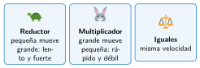

Más rápido o más fuerza: la relación de transmisión
🤔 Pienso5 min
Qué hago aquí: Piensa un momento y contesta con lo que ya sabes. No pasa nada si no lo sabes: es para empezar.
Encaja un engranaje de 8 dientes con uno de 24. Marca un diente de cada uno. Gira el pequeño hasta que el grande dé una vuelta. ¿Cuántas vueltas ha dado el pequeño?
📖 Leo y aprendo15 min
Qué hago aquí: Lee despacio, mira los dibujos y los ejemplos, y quédate con la idea clave del final.
Si las dos ruedas son de distinto tamaño, no dan las mismas vueltas. La pequeña gira más rápido que la grande.

✏️ Hago25 min
Qué hago aquí: Haz las actividades en orden. Empieza siempre por las básicas.
Rodea la respuesta correcta. Un engranaje pequeño mueve a uno grande. El grande gira más rápido / más lento. Es un reductor / multiplicador.
Un engranaje motor de 8 dientes mueve otro de 16. Calcula i.
Con el resultado de la actividad anterior: si el motor gira a 100 rpm, ¿a qué velocidad gira el conducido?
Una polea motriz de 6 cm de diámetro mueve otra de 2 cm. Con poleas se usan los diámetros igual que los dientes. Si el motor gira a 100 rpm, ¿a qué velocidad gira la conducida? ¿Es reductor o multiplicador?
🚀 Amplío (si quieres saber más)
Qué hago aquí: ¿Has terminado? Lee la curiosidad o elige el reto. Es voluntario.
Un tren de engranajes: 8 mueve a 24 y, en el mismo eje que el de 24, otro de 8 mueve a uno de 40. El motor gira a 600 rpm. ¿A qué velocidad gira el último eje?
✅ Compruebo5 min
Qué hago aquí: Contesta sin mirar la ficha y marca cómo lo llevas.